The Ozaki Scheme
Emulating FP64 matrix multiplication on low-precision hardware
University of Illinois Chicago
2026-11-04
Intro
FP64 on new GPUs
| GPU | Year | FP64 Vector (TFLOP/s) | FP64 Tensor Core (TFLOP/s) |
|---|---|---|---|
| V100 | 2017 | 7.8 | — |
| A100 | 2020 | 9.7 | 19.5 |
| H100 | 2022 | 34 | 67 |
| B200 | 2024 | 37 | 37 |
| B300 | 2025 | 1.3 | 1.3 |
| Rubin | 2026 | 33 | 200 (emulated) |
“The floating-point capability of the platform is not improved – not improved – over the previous generation.” — Jack Dongarra, SC25 (Woodie 2026b)
Emulation: Use the abundant low-precision hardware to get results equivalent to native FP64. The method is the Ozaki scheme (Ozaki et al. 2012).
Various perspectives
People who care a lot about FP64 don’t agree on what emulation is for.
“FP8 is All You Need: Debunking Hardware FP64 as the HPC Holy Grail”
Satoshi Matsuoka, RIKEN (Eadline 2026)
“We don’t view this [as a] substitution. These are complementary.”
Darío Gil, U.S. Department of Energy (Woodie 2026b)
“If there’s a case that this emulation is producing scientifically acceptable results, then suddenly our FP64 cost is now divided by 2X to 3X without actually changing the chip.”
Dan Stanzione, TACC (Prickett Morgan 2026)
“If you get to wrong answers really fast, that’s not helping anybody. We want to get to right answers fast.”
Joseph George, AMD (Woodie 2026a)
Goal: Trace the development of the Ozaki scheme, and consider what each work tells us about when it can or should be used.
Foundations
Floating-point basics
\[ \text{value} = \text{mantissa} \times 2^{\text{exponent}} \]
\[ \text{e.g.} \quad 28.016 = 1.751 \times 2^{4} \]
Our discussion is concerned with FP64:
53-bit mantissa
11-bit exponent
Max relative error from rounding a real number to FP64:
\[ 2^{-53} \approx 1.11 \times 10^{-16} \]
Floating-point space
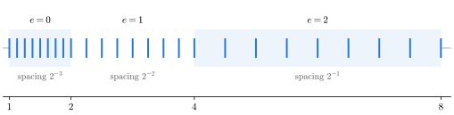
Floating-point space: Floating-point values are a subset of points on the real number line.
Density of coverage decreases as magnitude grows
Mantissa space: One value
\[x_1 = 1.751 \times 2^{4}\]
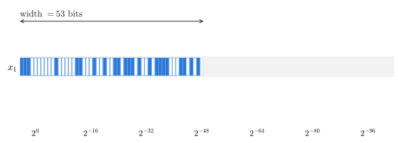
Mantissa space: Visualization of floating-point mantissas, showing the magnitude of each bit
One floating-point value: Mantissa space is 53 bits wide.
Mantissa space: Two values
\[x_1 = 1.751 \times 2^{4}\] \[x_2 = 1.317 \times 2^{2}\]
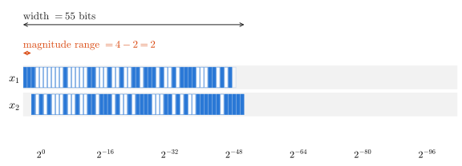
Width: Distance from the most significant bit of the highest-magnitude value to the least significant bit of the lowest-magnitude value.
Magnitude range: Difference in exponents of the highest- and lowest-magnitude values.
Mantissa space: Three values
\[x_1 = 1.751 \times 2^{4}\] \[x_2 = 1.317 \times 2^{2}\] \[x_3 = 1.092 \times 2^{-51}\]
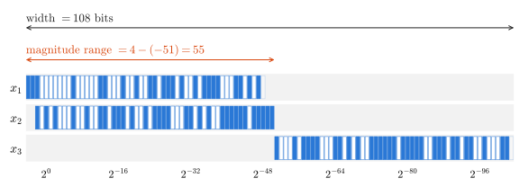
\(x_1\) and \(x_2\): Magnitude range = 2, mantissa space width = 55
\(x_1\), \(x_2\), and \(x_3\): Magnitude range = 55, mantissa space width = 108
Larger magnitude range → Wider mantissa space
The Ozaki Scheme
Method · Trade-off · Purpose
Rounding in mantissa space
Method → Trade-off → Purpose
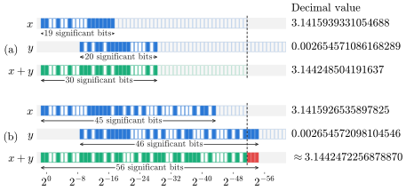
The result is rounded only if it doesn’t fit in the 53-bit mantissa.
If the operands have few enough significant bits, the result is exact.
Splitting
Method → Trade-off → Purpose
Rump et al. split a single value \(x\) into a high part \(x^{(1)}\) and a low part \(\underline{x}^{(2)}\) (Rump et al. 2008).
\[ x^{(1)} = \text{fl}\big((\sigma + x) - \sigma\big) \qquad \underline{x}^{(2)} = \text{fl}(x - x^{(1)}) \]
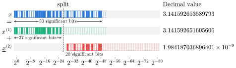
Splitting factor: \(\sigma\), a power of 2, parameterized by \(M\)
Property: \(x^{(1)}\) has at most \(53 - M\) significant bits
Decomposition of a product
Method → Trade-off → Purpose
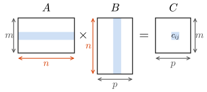
The elements of a matrix product with inner dimension \(n\) are dot products between vectors of length \(n\).
Each dot product has \(n\) multiplications and \(n - 1\) additions, where floating-point error can accumulate.
Splitting a vector
Method → Trade-off → Purpose
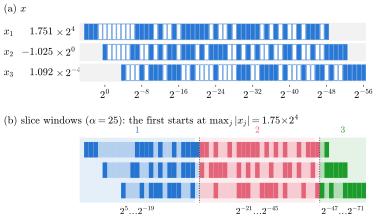
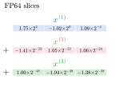
Scale \(\sigma\) to the largest element of \(x\), then split each remainder again.
Result: \(x\) is a sum of slices, each with at most \(53 - M\) significant bits
Exact slice products
Method → Trade-off → Purpose
Split \(y\) the same way, and the dot product becomes a sum of slice products:
\[ x^T y = \big(x^{(1)} + \cdots + x^{(n_x)}\big)^T \big(y^{(1)} + \cdots + y^{(n_y)}\big) = \sum_{i=1}^{n_x} \sum_{j=1}^{n_y} \underbrace{{x^{(i)}}^T y^{(j)}}_{\text{exact}} \]
Rounding error only accumulates when the slice products are added together.
\(x^T y\) is more accurate than if it had been computed directly.
The Ozaki scheme
Method → Trade-off → Purpose
- Decompose: Split \(A\) and \(B\) into slices, fully or partially
- Multiply: Slices are standard FP64 matrices, so slice products use standard FP64 matrix multiplication routines
- Accumulate: Accept rounding error in the sum, or use an accurate summation technique
Trade-off: Accuracy vs. performance
Method → Trade-off → Purpose
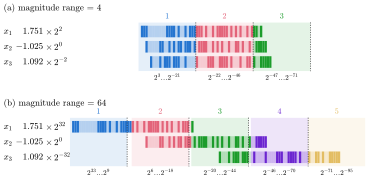
Slices should cover the whole mantissa space. Any part that isn’t covered is represented inexactly.
Wider mantissa space requires more slices to cover it, and more slices means more memory overhead and more computation.
Test matrices
Method → Trade-off → Purpose
Ozaki et al. generate test matrices with a controlled magnitude range:
\[ a_{ij} = \underbrace{(\text{rand} - 0.5)}_{\text{uniform mantissa}} \times \underbrace{e^{\,\phi \cdot \text{randn}}}_{\text{normal exponent}} \]
\(\phi\) is the parameter controlling magnitude range.
We’ll keep seeing matrices like these in the later evaluations.
The trade-off in the results
Method → Trade-off → Purpose
M1 FP64 · M2 lssresidual (INTLAB) · M3–M5 Ozaki scheme, 2, 3, 4 slices · M6 XBLAS
Accuracy (maximum componentwise relative error)

Time relative to standard FP64

As \(\phi\) increases, the schemes with lower slice counts see more accuracy degradation. More slices take longer.
What it was for
Method → Trade-off → Purpose
At this point, the Ozaki scheme is only meant to be an efficient and more accurate way of performing matrix multiplication.
Tested on: Intel Core 2 Duo and Core 2 Extreme, MATLAB, \(n = 1000\) and \(2000\)
Result: Accuracy near XBLAS at low \(\phi\), in a much smaller fraction of the time (8–35× faster)
The evaluations show the Ozaki scheme can be more efficient than other methods for accurate matrix multiplication, though not over a wide range of cases.
A wrapper around matrix multiplication
Method → Trade-off → Purpose
Slices are regular FP64 matrices, so most of the work can be offloaded to optimized BLAS routines.
The Ozaki scheme is essentially a wrapper around DGEMM, transforming one DGEMM call into several.
This also makes it promising as a method that could be integrated transparently into existing libraries.
Takeaways: Ozaki et al. (2012)
Role: A faster way of performing accurate matrix multiplication
Trade-off: Magnitude range determines the slice count, which trades accuracy against performance and memory
Ozaki on IMMU
Tensor Cores · Integer Slices · New Possibilities
Ozaki is shaped like Tensor Cores
Tensor Cores → Integer Slices → New Possibilities
Tensor Cores (2018): Dedicated mixed-precision matrix multiplication circuits. Inputs can be in lower precision than outputs.
FP64 slices are deliberately restricted to a fraction of the mantissa (27 of 53 bits here). That headroom exists only so the result can be exact in FP64.
There’s no reason the slices themselves can’t use smaller formats.
The first Ozaki scheme on Tensor Cores (2020) used FP16-FP32 cores (Mukunoki et al. 2020)
Ootomo et al. (2024)
Tensor Cores → Integer Slices → New Possibilities
DGEMM on integer matrix multiplication unit
Hiroyuki Ootomo, Katsuhisa Ozaki, Rio Yokota · The International Journal of High Performance Computing Applications, 2024 (Ootomo et al. 2024)
The Ozaki scheme on integer Tensor Cores (INT8)
Integer slices
Tensor Cores → Integer Slices → New Possibilities
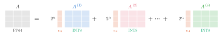
Ootomo et al. use a block-float format: Each slice contains integer values aligned to a shared exponent.
Exponents are divided out and stored in separate vectors.
The IMMU Ozaki scheme
Tensor Cores → Integer Slices → New Possibilities
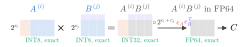
- Decompose: Split into INT8 slices and scaling vectors
- Multiply: Compute slice products on integer Tensor Cores, then convert products back to FP64 using the shared exponents and scaling vectors
- Accumulate: Sum the FP64 products
What the slices leave out
Tensor Cores → Integer Slices → New Possibilities
With \(s\) INT8 slices, the product is only approximated:
\[ AB \approx \sum_{i + j \,\le\, s + 1} A^{(i)} B^{(j)} \]
Bits below the last slice are cut off, and products with \(i + j > s + 1\) are skipped.
The main error comes from insufficient splitting, not from rounding.
Experimental setting
Tensor Cores → Integer Slices → New Possibilities
- Inputs: Same synthetic matrices as Ozaki et al. (2012), \(\phi = 0.1, 1, 2, 4\)
- Hardware: A100, TITAN RTX, RTX A6000, RTX 6000 Ada
- Error: Maximum componentwise relative error, against a double-double reference
- Variants: INT8x9, INT8x11, INT8x13 (9, 11, 13 slices)
Results: Accuracy
Tensor Cores → Integer Slices → New Possibilities

At low \(\phi\), all variants stay near \(10^{-16}\). As \(\phi\) grows, variants with fewer slices degrade first.
We see again that lower slice counts improve performance at the cost of accuracy.
Results: Throughput
Tensor Cores → Integer Slices → New Possibilities

FP64 : INT8 peak: A100 1 : 32 · TITAN RTX 1 : 522 · RTX A6000 1 : 515 · RTX 6000 Ada 1 : 520
A100: At best 8 TFlop/s, vs. DGEMM’s ~17.
Consumer GPUs: Up to 3, 4, 6 TFlop/s, vs. DGEMM’s 0.5–1.
Speedup depends on the hardware. The new implementation let’s us take proper advantage of what the hardware provides.
New possibilities
Tensor Cores → Integer Slices → New Possibilities
On some hardware, the Ozaki scheme can be used not just to produce a more accurate matrix product, but to produce it faster than the standard DGEMM routine, and more power efficiently.
But: Testing is still limited to synthetic matrices, in a narrow range of sizes. Speedup only shows up for large enough matrices, and memory overhead is not measured.
More slices, smaller slices
Tensor Cores → Integer Slices → New Possibilities
Memory: INT8 slices hold at most 8 bits, so we need more of them. But one FP64 slice takes the memory of 8 INT8 slices, so we can often come out ahead.
Compute: Where INT8 throughput is high enough, we can compute some number of INT8 slice products faster than one FP64 matrix multiplication.
Usability
Tensor Cores → Integer Slices → New Possibilities
Users have to manually tune the slice count, based on:
- Desired accuracy: Can be difficult to know
- Magnitude range of their matrices: Easy to measure, but costly at small sizes
- Their hardware: How many slices are equivalent to one FP64 matrix multiplication
Takeaways: Ootomo et al. (2024)
Role: Faster than the standard DGEMM routine, on some hardware
Trade-off: Unchanged, but with more (smaller) slices, and users still tune the slice count manually
Ozaki with ADP
FP64 Emulation · ESC · ADP
Schwarz et al. (2026)
FP64 Emulation → ESC → ADP
Guaranteed DGEMM Accuracy While Using Reduced Precision Tensor Cores Through Extensions of the Ozaki Scheme
Angelika Schwarz, Anton Anders, Cole Brower, Harun Bayraktar, John Gunnels, Kate Clark, RuQing G. Xu, Samuel Rodriguez, Sebastien Cayrols, Pawel Tabaszewski, Victor Podlozhnyuk NVIDIA · SCA/HPCAsia ’26, 2026 (Schwarz et al. 2026)
2025: FP64 emulation added to cuBLAS (NVIDIA 2025)
Use emulation when it is beneficial, and standard DGEMM when it is not
A new goal
FP64 Emulation → ESC → ADP
Ozaki et al. (2012)
Goal: As little rounding error as possible
Slice width chosen so slice products are provably exact
Schwarz et al. (2026)
Goal: FP64-equivalent accuracy
Slices always contain eight significant bits
Aiming for FP64-equivalent accuracy gives us a foothold for reasoning about how many slices we need.
Every slice uses all 8 bits
FP64 Emulation → ESC → ADP
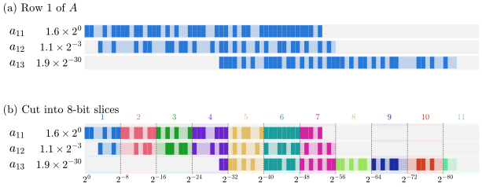
Slices are cut from the largest value down, eight bits at a time.
How many slices do we actually need?
Which bits matter
FP64 Emulation → ESC → ADP
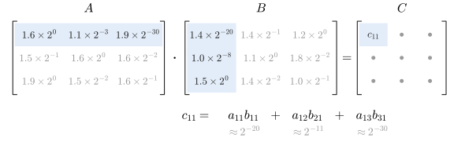
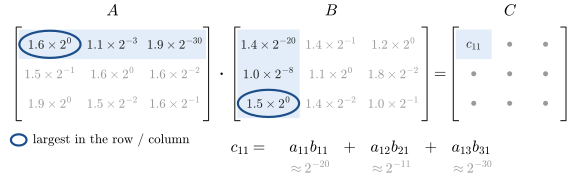
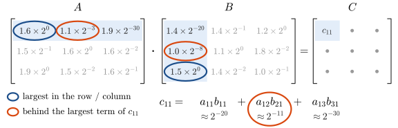
Slices should cover every mantissa bit of the largest values, and of the values behind the largest term.
ESC: \(0 + 0 - (-11) = 11\) extra bits
Slices over 53 + ESC bits
FP64 Emulation → ESC → ADP
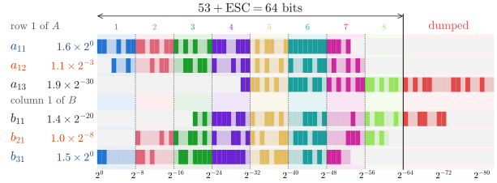
Slices cover \(53 + \text{ESC}\) bits. The rest is dumped.
Enough for FP64-equivalent accuracy? Asserted, not proven.
Automatic Dynamic Precision (ADP)
FP64 Emulation → ESC → ADP

Check for Inf/NaN, compute ESC, then decide: Emulate, or fall back to native DGEMM
Goal: A matrix product at least as accurate as native FP64, in at least the same amount of time
How the heuristic decides “emulation slower than FP64?” is not described.
Experimental setting
FP64 Emulation → ESC → ADP
- Inputs: Demmel et al.’s test matrices, with a parameter \(b\) controlling exponent range (Demmel et al. 2026)
- Hardware: GB200, RTX Pro 6000 Blackwell Server Edition
- Accuracy: Maximum componentwise relative error, against a standard FP64 matrix multiplication
- Variants: With and without fallback to native DGEMM
Evaluation: Accuracy
FP64 Emulation → ESC → ADP

With fallback: Accuracy indistinguishable from native DGEMM.
Evaluation: Speed
FP64 Emulation → ESC → ADP

FP64 : INT8 peak: GB200 1 : 125 · RTX Pro 6000 1 : 512
With fallback: Up to 2.3× faster on GB200, and 13.2× on RTX Pro 6000.
What the evaluations tell us
FP64 Emulation → ESC → ADP
The Ozaki scheme is now an explicit alternative to DGEMM, but it is still evaluated the way it was when it was an accurate matrix multiplication scheme.
But: No adversarial inputs, no look inside the fallback heuristic, and memory overhead is still not measured.
Impacts of implementation
FP64 Emulation → ESC → ADP
Accuracy: Slice products are no longer guaranteed exact, though this only matters for very large matrices
Memory: Eight significant bits in every slice is the best memory overhead the scheme can get
Usability: Emulation is invisible to the user… but the decision to emulate is a black box
Takeaways: Schwarz et al. (2026)
Role: FP64 emulation, a drop-in replacement for DGEMM used only when it is beneficial
Trade-off: Handled automatically by ESC and ADP, but how ADP makes that call is not described
Ozaki in Applications
Early Examples · DMRG · Results
Early examples
Early Examples → DMRG → Results
Until this point, every evaluation has been on synthetic workloads. Are there matrix products in actual applications that would benefit from emulation?
Quantum circuit simulation (Ootomo et al. 2024)
2–4.85× faster than cuBLAS ZGEMM, same or better accuracy
(Random unitary circuits: “toy models”)
QR factorization (Schwarz et al. 2026)
Without ADP: 5× faster, error 2.9e-12
With ADP: 3.5× faster, error 7e-16
Neither is a full, end-to-end application workload.
Brower et al. (2026)
Early Examples → DMRG → Results
Mixed-Precision Ab Initio Tensor Network State Methods Adapted for NVIDIA Blackwell Technology via Emulated FP64 Arithmetic
Cole Brower, Samuel Rodriguez Bernabeu, Jeff Hammond, John Gunnels NVIDIA
Sotiris S. Xantheas Pacific Northwest National Laboratory; University of Washington
Martin Ganahl SandboxAQ
Andor Menczer, Örs Legeza Wigner Research Centre for Physics
Published in Journal of Chemical Theory and Computation, 2026 (Brower et al. 2026)
Ozaki emulation in an actual scientific application
DMRG
Early Examples → DMRG → Results
DMRG: Iterative algorithm for finding the lowest-energy state of a molecule
Every iteration: Many DGEMMs, some in rounding-sensitive steps (eigensolver, SVD)
Bond dimension \(D\): Higher is more accurate, but takes more memory and compute
From \(D\) to DGEMMs
Early Examples → DMRG → Results
The matrices in DMRG are \(D \times D\). Symmetries split them into smaller blocks, and the DGEMMs run on the blocks, not on the whole matrix.
DGEMM structure from the group’s hybrid CPU-GPU implementation (Menczer and Legeza 2025)
A lot of DGEMM work, but it arrives as many DGEMMs much smaller than \(D\).
Accuracy
Early Examples → DMRG → Results

Small system: 6 and 4 slices track FP64; 2 miss the target, and 3 is borderline.

Large system: 4 and 6 slices agree with FP64 over 700 iterations.
Performance
Early Examples → DMRG → Results

Eager: Emulate every DGEMM. Slower than native FP64, even with 2 slices.
Performant: The library decides. Tracks native FP64: It appears to always choose not to emulate.
The fallback works, but that’s a bad sign for “emulation speeds up workloads.”
Performance at scale
Early Examples → DMRG → Results

Native FP64 vs. performant emulation on B200, with H100 for reference
Performant mode tracks native FP64: Even at scale, it appears to choose native DGEMM.
What the application tells us
Early Examples → DMRG → Results
Accuracy: Four to six slices reach chemical accuracy. Two slices break DMRG entirely.
Speed: No real gain yet. Emulation is “often slower for memory-bound matrix multiplications”, and sector DGEMMs are small.
Caveat: Prerelease cuBLAS, and the paper defers performance to a later study.
Takeaways: Brower et al. (2026)
Role: FP64 emulation inside a real scientific code, with the library deciding DGEMM by DGEMM
Trade-off: Accuracy holds with few slices, but speedup depends on DGEMM size, which is set by sector sizes, not \(D\)
Discussion
Evidence · Hardware and Inputs · Variable Precision · Future Work
Tracing the Ozaki scheme
Evidence → Hardware and Inputs → Variable Precision → Future Work
Ozaki et al. (2012)
Ootomo et al. (2024)
Schwarz et al. (2026)
Brower et al. (2026)
From accurate matrix multiplication to potential FP64 replacement
Back to the debate
Evidence → Hardware and Inputs → Variable Precision → Future Work
Can emulation boost FP64 throughput?
Yes, sometimes.
Compute-bound on matrix multiplication: Emulation helps, if the low-precision throughput is there
Memory-bound: Emulation doesn’t help, but neither would more FP64 throughput
Where DMRG lands
Evidence → Hardware and Inputs → Variable Precision → Future Work
Brower et al.: No speedup, even on hardware that favors emulation
Why: Memory-bound matrix products, at problem sizes where ADP and slicing overhead dominate
Performance comes from hardware
Evidence → Hardware and Inputs → Variable Precision → Future Work
Number one factor: The FP64 : low-precision throughput ratio of the target hardware
Faster than FP64 at 1 : 512 (consumer GPUs), slower at 1 : 32 (A100)
Emulation beats native DGEMM precisely on the hardware where native FP64 has been deprioritized.
Two ways to read this
Evidence → Hardware and Inputs → Variable Precision → Future Work
Cynical: You can make emulation arbitrarily better than FP64 by having terrible FP64 support.
Intriguing: Low-precision hardware is cheaper to build and run. If the same chip area gives more emulated FP64 than native, clinging to native FP64 may be the inefficient choice.
Hardware is not the only factor
Evidence → Hardware and Inputs → Variable Precision → Future Work
FP64 : INT8 throughput ratio
Magnitude range of the inputs
Matrix dimensions
When the hardware favors emulation, emulation is faster on some inputs.
Does emulation help me?
Evidence → Hardware and Inputs → Variable Precision → Future Work
A broad study across magnitude ranges, structures, and shapes
A faster matrix multiplication phase can still mean a net slowdown
So far: The same synthetic matrices, stressing magnitude range and size only.
A variable-precision method
Evidence → Hardware and Inputs → Variable Precision → Future Work
2012
2024–2026
Each 8-bit integer slice adds another 8 bits of mantissa. Change the number of slices, and we get more or fewer bits than FP64’s 53.
Brower et al.: 4 and 6 slices, less than FP64, still chemical accuracy in DMRG.
The question changes
Evidence → Hardware and Inputs → Variable Precision → Future Work
Can emulation replace FP64 for this workload?
What precision does this workload actually need?
The Ozaki scheme gives us a framework to study how much precision a problem really needs.
Future work
Evidence → Hardware and Inputs → Variable Precision → Future Work
| Gap | Comes from |
|---|---|
| How the scheme fails on structured, real-application, and extreme-aspect-ratio matrices | Synthetic test matrices |
| Net performance of full workloads on emulation-favoring hardware | Benchmarks of one matrix product at a time |
| Memory overhead and data movement in full applications | Rarely reported in detail |
| Slice count chosen from an application-level accuracy target | ADP’s fixed FP64 target |
| Interaction with high-accuracy methods | FP64-equivalence as the target |
| Older numerical techniques that fit modern GPUs’ asymmetric throughput | The Ozaki scheme itself: 2012 → 2024 |
Conclusion
Open questions
Is INT8 support here to stay? The integer-slice formulations depend on it.
Ozaki-II: The FP8 variant behind “FP8 is all you need.”
Conclusion
Ozaki et al. (2012)
Ootomo et al. (2024)
Schwarz et al. (2026)
Brower et al. (2026)
“We want to get to right answers fast.” Which answers are right depends on the precision each workload needs.
The Ozaki scheme is best understood as a variable-precision method.